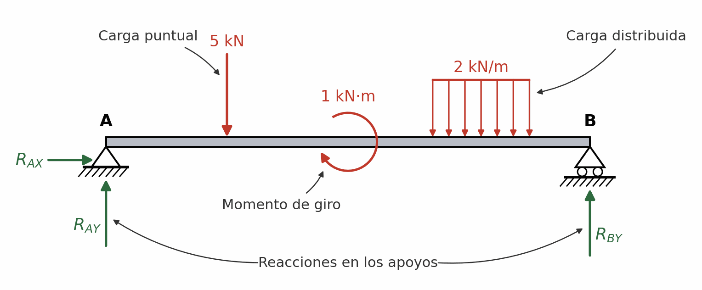
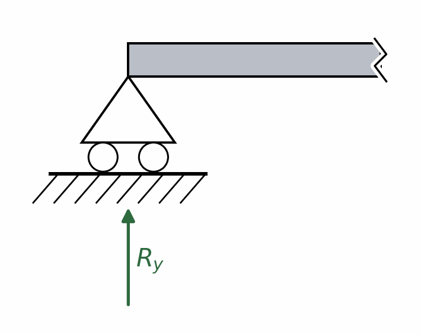
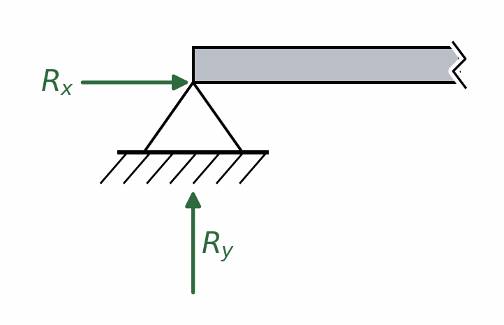
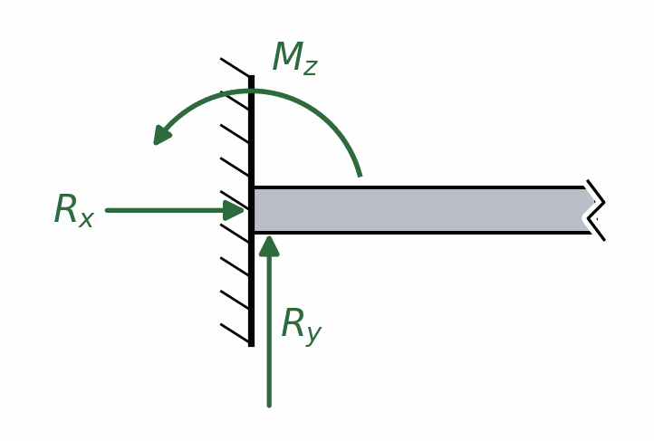
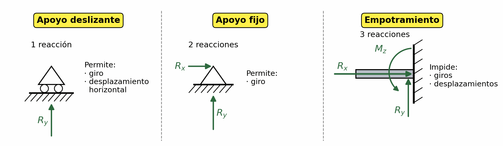

Contenido
Apoyos y reacciones
Estudia qué movimientos impide cada apoyo y deduce de ahí sus reacciones. El número de flechas no se memoriza aislado: se razona desde los grados de libertad.
2.1 Cargas aplicadas y reacciones
Las fuerzas que actúan sobre la estructura se llaman cargas estructurales y son causantes de esfuerzos, deformaciones y desplazamientos. Todas tienen que ser incluidas en el cálculo estructural.
- Tipos: Las cargas pueden ser fijas (como el peso propio) o variables (como el viento).
- Unidades: Se miden en newtons (N) en el Sistema Internacional.
- Distribución: Pueden ser puntuales (un punto), distribuidas (sobre una longitud) o momentos (giros en una sección).
Para mantener el equilibrio estático, es necesario que se produzcan reacciones. La viga no está aislada, sino sujeta a otros elementos que generan una reacción opuesta a las cargas.

2.2 Tipos de apoyos y restricciones
El valor de las reacciones depende de las cargas y de las restricciones de la viga. No es lo mismo un apoyo simple que un empotramiento. Las limitaciones de movimiento que introducen los apoyos definen estas restricciones.
Para el cálculo de vigas identificamos tres tipos principales:
Apoyo Deslizante
Permite la rotación y el movimiento en una dirección (generalmente horizontal).

- Reacción (\(R_y\)): Aparece una única fuerza perpendicular a la superficie de apoyo: vertical si el plano de rodadura es horizontal, y horizontal si es vertical. También se le llama apoyo móvil o apoyo libre.
- Momento: No hay, la rotación está permitida.
Apoyo Fijo (Articulado)
Permite la rotación pero impide cualquier traslación.

- Reacciones (\(R_x, R_y\)): Aparecen fuerzas en ambos ejes, ya que se impide la traslación en cualquier dirección.
- Momento: No hay, la rotación está permitida.
Empotramiento
Impide cualquier movimiento (traslación o rotación).

- Reacciones (\(R_x, R_y\)): Aparecen fuerzas en ambos ejes.
- Momento (\(M_z\)): Aparece un momento de reacción ya que se impide la rotación.
Resumen de reacciones en apoyos

2.2.1 Ejemplos reales
En el siguiente vídeo puedes ver ejemplos en el mundo real de estos tipos de apoyos:
Microcomprobación 1 - Apoyos, grados de libertad y reacciones
- En el plano, ¿qué reacciones genera un apoyo articulado fijo?
- ¿Qué reacción genera un apoyo móvil sobre una superficie horizontal?
- ¿Tener tres reacciones garantiza por sí solo que una viga sea isostática?
Comprobar y leer la retroalimentación
1. Dos componentes, Rx y Ry: impide las dos traslaciones y permite el giro. 2. Una reacción vertical, perpendicular a la superficie: permite la traslación horizontal y el giro. 3. No. Las restricciones deben ser independientes y estar dispuestas de manera que aseguren la estabilidad; tres reacciones concurrentes o mal orientadas pueden dejar un mecanismo.
Clasifica
Clasifica cada característica según el apoyo al que corresponde. Razónalo desde los movimientos que impide cada apoyo.